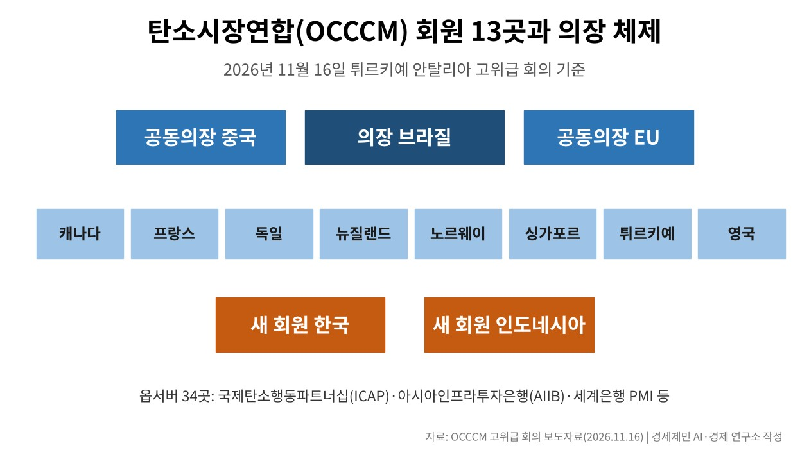
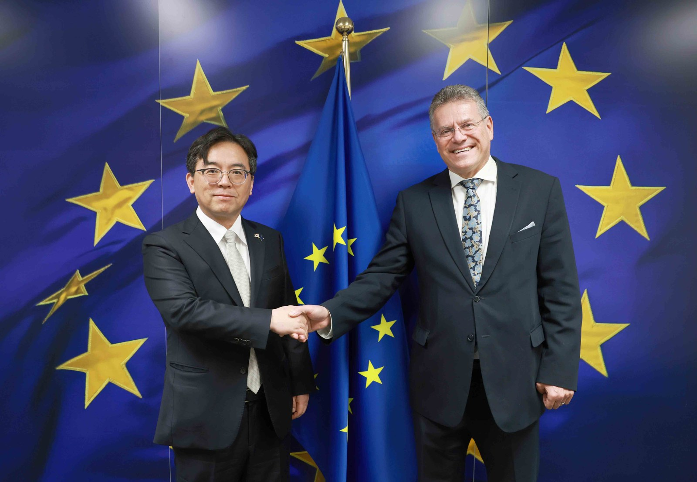
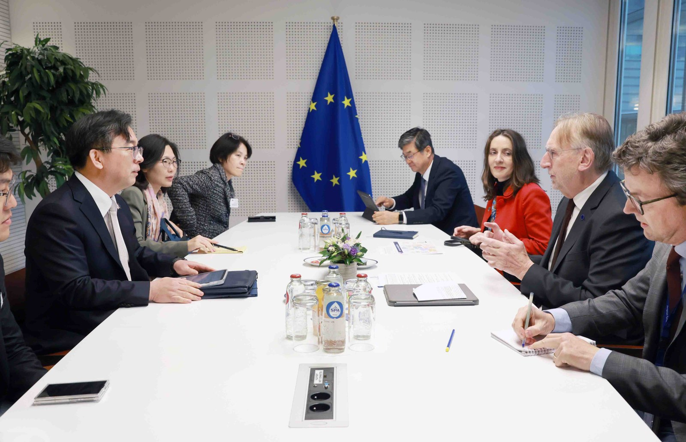
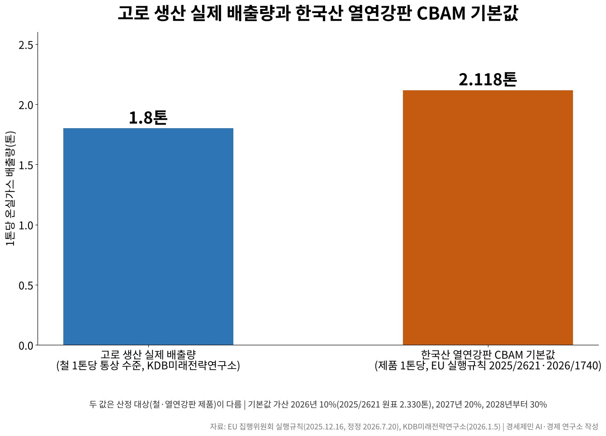

EU·중국 공동의장 탄소시장연합에 한국 가입, 회원 13곳
한국산 열연강판 CBAM 기본값 톤당 2.118톤
AI경제저널=김갑봉 기자 | 2026년 11월 16일 튀르키예 안탈리아였다. 제31차 유엔기후변화협약 당사국총회(COP31)에 맞춰 의무탄소시장 개방연합(OCCCM, 탄소시장연합) 고위급 회의가 열렸다. 브라질이 한국과 인도네시아를 새 회원으로 맞았다.
기후에너지환경부는 16일 김성환 장관이 회의에서 가입을 발표한다고 밝히고 발언 요지를 미리 내놨다.
요지는 한국이 2015년 동아시아 첫 국가 단위 배출권거래제를 도입해 국가 온실가스 배출량 70% 이상을 관리한다는 것이다. 산정·보고·검증(MRV) 체계, 시장 설계·운영, 상쇄제도 경험을 회원국과 공유하겠다는 대목도 담겼다.
1. 브라질 의장, 중국·유럽연합 공동의장 체제
연합은 2025년 제30차 당사국총회(COP30) 벨렝 선언에서 출발했다. 2026년 5월 7일 이탈리아 피렌체 1차 고위급 회의에서 운영규정을, 9월 14일 중국 우한(武漢) 2차 회의에서 업무계획을 채택했다.
브라질이 첫 2년 의장을 맡고 중국과 유럽연합(EU)이 공동의장이다. 회원은 13곳이다. 브라질·캐나다·중국·EU·프랑스·독일·뉴질랜드·노르웨이·싱가포르·튀르키예·영국에 한국과 인도네시아가 더해졌다.
옵서버는 국제탄소행동파트너십(ICAP) 등 34곳이다. 연합은 참여 국가와 지역이 세계 국내총생산(GDP)과 배출량의 절반 가까이를 차지한다고 밝혔다.

2. 중국 탄소시장 65%, EU 국제 탄소크레디트
리가오(李高) 중국 생태환경부 부부장은 중국 전국 탄소시장이 자국 이산화탄소 배출량의 65% 이상을 포괄한다고 했다. 시장 설계를 발전시키고 배출권 관리와 MRV·탄소회계 체계를 강화하며 배출 자료의 질을 높여 가고 있다고 했다.
쿠르트 반덴베르허 EU 집행위원회 기후총국장은 고품질 탄소크레디트가 내년 EU 우선과제라고 했다. 집행위가 2040년 기후목표에 산입할 수 있는 고품질 국제 탄소크레디트 공급을 보장하는 제안을 준비한다고 했다.
크리스티나 헤이스 브라질 탄소시장 특별비서관은 로드맵이 제안한 화석연료 퇴출을 앞당기려면 탄소가격 제도 강화가 꼭 필요하다고 했다.
3. 작업반 출범, 2027년 1월 가동
연합은 이날 작업반을 출범시켰다. 기술 업무는 시장 설계 수렴과 정책 교류, MRV·탄소회계·상호운용성 준비, 의무시장 안 고신뢰 상쇄크레디트 활용과 파리협정 제6조 연계 세 갈래다.
작업반은 2027년 1월 활동을 시작한다. COP31 선언문은 MRV에서 장기적 상호운용성 증진 방안을 모색하고, 탄소회계 방법론에서는 장기적으로 탄소시장 상호운용성을 지향한다고 적었다.
ICAP는 4월 보고서에서 2026년 2월 기준 시행 중인 배출권거래제 41개가 세계 온실가스 배출량 26%를 다룬다고 집계했다. 한국 제도는 제4차 할당계획기간(2026~2030년)에 들어갔다고 정리했다.
4. 열연강판 기본값 2.118톤과 산정 단위 차이
기후에너지환경부 붙임 자료를 보면 한국 가입은 한-EU 정상외교 성과사업이다. EU가 2026년 6월 한국에 가입을 제안했다.
박정성 산업통상부 통상교섭본부장은 11월 12일 브뤼셀에서 마로시 셰프초비치 EU 통상·경제안보 담당 집행위원을 만났다. 6월 정상회담에서 합의한 한-EU 경쟁력 파트너십 출범과 고위급 경제대화 신설을 논의했다.

박 본부장은 같은 날 베른트 랑에 유럽의회 국제통상위원장에게 EU 산업가속화법 등 통상현안에 대한 한국 입장을 전달했다.

산업은행 KDB미래전략연구소는 1월 보고서에서 EU 탄소국경조정제도(CBAM)가 2026년 1월 본격 시행됐다고 설명했다. 국내 배출권거래제는 설비·사업장 단위로, CBAM은 제품 단위로 배출량을 산정한다고 했다.
EU 집행위가 2025년 12월 16일 정한 CBAM 기본값 실행규칙을 보면 한국산 열연강판 기본값은 제품 1톤당 온실가스 2.118톤이다. 올해 7월 20일 정정 규칙에서도 값은 같다.
기본값에는 2026년 10%, 2027년 20%, 2028년부터 30%를 더한다.

보고서는 고로 생산 실제 배출량을 통상 철 1톤당 1.8톤 수준으로 봤다. 실제 배출량을 인정받지 못하면 기본값이 적용돼 탄소비용이 커질 수 있다고 했다. EU 규칙의 2.118톤은 열연강판 제품 1톤당 값이다.
보고서는 당시 잠정 수치로 열연강판 EU 수출 인증서 비용을 톤당 80달러(보고서 표기 약 11만원)로 추정했다. COP31은 20일 막을 내린다.
※ 이 기사는 인공지능기자 위민아이(Wemin_AI)와 협력해 작성했습니다.
참고문헌
공식 발표·공공기록
· 중국 생태환경부, "生态环境部出席第十届佛罗伦萨进程等会议", 2026년 5월 8일, https://www.mee.gov.cn/ywdt/hjywnews/202605/t20260508_1151275.shtml
· EU 집행위원회 기후총국, "EU, Brazil and China launch open coalition to boost integrity and effectiveness of carbon markets", 2026년 5월 7일, https://climate.ec.europa.eu/news-other-reads/news/eu-brazil-and-china-launch-open-coalition-boost-integrity-and-effectiveness-carbon-markets-2026-05-07_en
· EU 집행위원회, "Commission Implementing Regulation (EU) 2025/2621 of 16 December 2025 … as regards the establishment of default values", EU 관보 L, 2025년 12월 31일, https://eur-lex.europa.eu/legal-content/EN/TXT/HTML/?uri=OJ:L_202502621
· EU 집행위원회, "Commission Implementing Regulation (EU) 2026/1740 of 20 July 2026 correcting Implementing Regulation (EU) 2025/2621 as regards Annexes I and IV thereto", EU 관보 L, 2026년 7월 31일, https://eur-lex.europa.eu/eli/reg_impl/2026/1740/oj
· 기후에너지환경부, "대한민국, 탄소시장연합 회원국 공식 가입… 국제 탄소시장 협력 본격 참여", 보도자료, 2026년 11월 16일, https://www.mcee.go.kr/home/web/board/read.do?menuId=10598&boardMasterId=939&boardId=1907610
· 기후에너지환경부, "기후부-글로벌녹색성장기구, 녹색성장 협력 넓혀 에너지전환 함께 지원", 보도자료, 2026년 11월 16일, https://www.mcee.go.kr/home/web/board/read.do?menuId=10598&boardMasterId=939&boardId=1907620
· 의무탄소시장 개방연합(OCCCM), "Open Coalition on Compliance Carbon Markets adopts COP31 Declaration and launches its Working Groups", 고위급 회의 보도자료, 2026년 11월 16일, https://api.occcm.org/media/milestones/attachments/91d819b6-baa6-49cf-a20b-65e33b43b010.pdf
· 의무탄소시장 개방연합(OCCCM), "COP31 Declaration", 2026년 11월 16일, https://api.occcm.org/media/milestones/attachments/fcb1fb41-9859-421e-8433-375fb485290c.pdf
· EU 집행위원회 기후총국, "Open Coalition on Compliance Carbon Markets adopts COP31 Declaration and launches its Working Groups", 2026년 11월 16일, https://climate.ec.europa.eu/news-other-reads/news/open-coalition-compliance-carbon-markets-adopts-cop31-declaration-and-launches-its-working-groups-2026-11-16_en
연구보고서·논문
· 김남현, "EU 탄소국경조정제도 본격 시행에 따른 철강 산업 영향", KDB미래전략연구소 『KDB Report』, 2026년 1월 5일, https://file.kdb.co.kr/fileView?groupId=1116D304-DC1B-9107-8702-38A95BE1C095&fileId=269F6AD1-F7A4-E5C2-B04F-E91A33880A38
· 국제탄소행동파트너십(ICAP), "Emissions Trading Worldwide: ICAP Status Report 2026", 2026년 4월 14일, https://icapcarbonaction.com/en/publications/emissions-trading-worldwide-icap-status-report-2026
사진·도표 출처
· [사진1] 산업통상부, 포토뉴스 「EU 통상·경제안보 담당 집행위원(장관) 면담」, 2026년 11월 12일 촬영(11월 13일 게시), https://www.motir.go.kr/kor/article/ATCLb41cda0c5/29369/view
· [사진2] 산업통상부, 포토뉴스 「유럽의회 국제통상위원회 위원장 면담」, 2026년 11월 12일 촬영(11월 13일 게시), https://www.motir.go.kr/kor/article/ATCLb41cda0c5/29368/view
· [도표1] 경세제민 AI·경제 연구소 작성, 자료 OCCCM 고위급 회의 보도자료(2026년 11월 16일)
· [도표2] 경세제민 AI·경제 연구소 작성, 자료 EU 실행규칙 2025/2621·2026/1740, KDB미래전략연구소 「EU 탄소국경조정제도 본격 시행에 따른 철강 산업 영향」(2026년 1월 5일)
저작권자 © AI경제저널 무단전재 및 재배포, AI학습 및 활용 금지